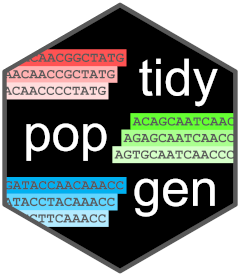
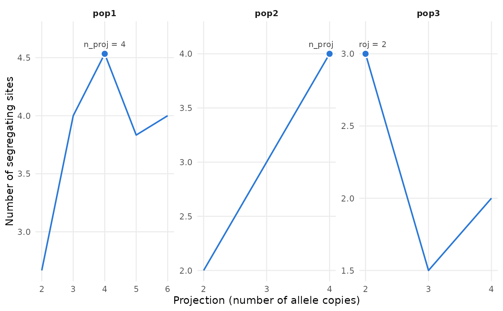

Preview the projections of the site frequency spectrum
Source:R/pop_sfs.R
pop_sfs_preview.RdFor each population, compute the number of segregating sites in its
site frequency spectrum projected to each possible number of allele
copies (from 2 to the number of allele copies of the population), as the
--preview option of easySFS. This is used to choose n_proj in
pop_sfs(), pairwise_pop_sfs() and nwise_pop_sfs(): projecting to more
allele copies gives more resolution (more segregating sites, especially
rare variants), but drops more loci with missing data. The dadi manual
recommends maximising the number of segregating sites, while keeping a
reasonable sample size.
Usage
pop_sfs_preview(.x, ...)
# S3 method for class 'tbl_df'
pop_sfs_preview(
.x,
ancestral = NULL,
n_cores = bigstatsr::nb_cores(),
block_size = bigstatsr::block_size(nrow(.x), 1),
...
)
# S3 method for class 'vctrs_bigSNP'
pop_sfs_preview(
.x,
ancestral = NULL,
n_cores = bigstatsr::nb_cores(),
block_size = bigstatsr::block_size(length(.x), 1),
...
)
# S3 method for class 'grouped_gen_tbl'
pop_sfs_preview(
.x,
ancestral = NULL,
n_cores = bigstatsr::nb_cores(),
block_size = bigstatsr::block_size(nrow(.x), 1),
...
)Arguments
- .x
a
gen_tibble, grouped by population (or ungrouped, to treat all individuals as a single population), or a vector of classvctrs_bigSNP(usually thegenotypescolumn of agen_tibble).- ...
other arguments passed to specific methods, currently unused.
- ancestral
the ancestral allele of each locus (see
pop_sfs()): if given, the loci whose ancestral allele is unknown are left out.- n_cores
number of cores to be used, it defaults to
bigstatsr::nb_cores()- block_size
maximum number of loci read at once.
Value
a tibble with columns group (or one column per grouping
variable, if the data are grouped by more than one variable; absent for
ungrouped data), n_proj (the number of allele copies of the
projection), n_seg_sites (the number of segregating sites, not rounded)
and n_loci (the number of loci with at least n_proj called allele
copies), and best, which is TRUE for the projection that maximises
the number of segregating sites (the largest one in case of ties), used
by default by pop_sfs(), pairwise_pop_sfs() and nwise_pop_sfs().
The tibble has class sfs_preview_tbl, and can be plotted with
autoplot().
Details
The number of segregating sites for a projection to \(p\) copies is
the expected number of loci that are polymorphic in a sample of \(p\)
copies drawn without replacement from the called copies of each locus
(loci with fewer than \(p\) called copies are dropped), i.e. the sum of
the cells of the projected spectrum that are not corners. It is the same
for the folded and unfolded spectrum. If unfolded spectra are polarised
with ancestral (see pop_sfs()), give the same ancestral here, so that
the loci without a known ancestral allele are left out of the preview, as
they are of the spectra.
Examples
example_gt <- load_example_gt("grouped_gen_tbl")
example_gt %>% pop_sfs_preview()
#> # A tibble: 11 × 5
#> group n_proj n_seg_sites n_loci best
#> <chr> <int> <dbl> <dbl> <lgl>
#> 1 pop1 2 2.67 6 FALSE
#> 2 pop1 3 4 6 FALSE
#> 3 pop1 4 4.53 6 TRUE
#> 4 pop1 5 3.83 5 FALSE
#> 5 pop1 6 4 5 FALSE
#> 6 pop2 2 2 6 FALSE
#> 7 pop2 3 3 5 FALSE
#> 8 pop2 4 4 5 TRUE
#> 9 pop3 2 3 6 TRUE
#> 10 pop3 3 1.5 4 FALSE
#> 11 pop3 4 2 4 FALSE
# the projection chosen for each population
example_gt %>%
pop_sfs_preview() %>%
dplyr::filter(best)
#> # A tibble: 3 × 5
#> group n_proj n_seg_sites n_loci best
#> <chr> <int> <dbl> <dbl> <lgl>
#> 1 pop1 4 4.53 6 TRUE
#> 2 pop2 4 4 5 TRUE
#> 3 pop3 2 3 6 TRUE
# plot the number of segregating sites for each projection
example_gt %>%
pop_sfs_preview() %>%
autoplot()
